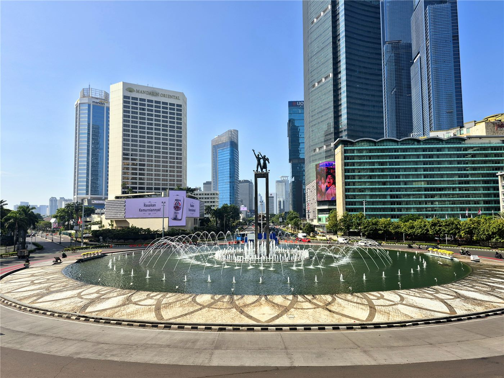

환구시보 연구원, ‘중국인이 본 아세안’ 여론조사 발표
중국의 한 매체 연구기관이 자국민을 대상으로 한 아세안 인식 여론조사 결과를 내놨다. 경제 교류 확대에 대한 기대가 두드러졌다.
전홍발 기자 · 2026.07.21
橋중국

환구시보 연구원이 2026년 ‘중국인이 본 아세안’ 여론조사 보고서를 발표했다고 환구망이 전했다. 아세안(동남아국가연합)은 중국과 인접한 거대 경제권으로, 무역·투자·관광에서 상호 의존이 깊다.
광고 문의 · 300×250조사는 응답자들이 아세안을 여행·투자·교육 등에서 밀접한 협력 상대로 인식하는 경향을 보였다고 전한다. 다만 여론조사는 표본과 문항 설계에 따라 결과가 달라질 수 있어, 하나의 참고 자료로 읽는 것이 적절하다.
역내 협력에 대한 기대가 커질수록, 각국은 자국의 이익과 지역 공동의 이익을 어떻게 조율할지에 대한 과제도 함께 안게 된다.
華橋時報는 여론조사 결과를 특정 방향의 근거로 삼지 않고, 데이터가 보여 주는 경향과 그 한계를 함께 전한다. 동남아 각국에도 오랜 역사를 지닌 화인 공동체가 있어, 지역 협력의 흐름은 화인 사회의 관심사이기도 하다.
출처·참고 (사실 확인용 — 본문은 직접 재작성)
· 環球網
· 環球網